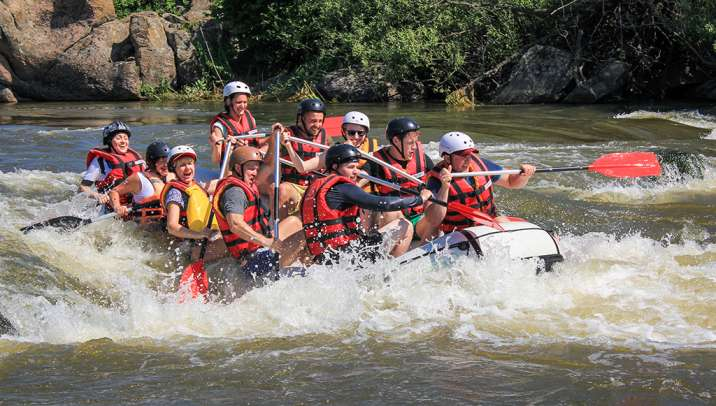
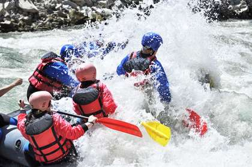

Whitewater rafting is a type of recreation that involves navigating a non-motorized watercraft down free flowing rivers. A rafting company organizes trips, provides the watercraft, life jackets, etc., and typically offers experienced guides to take passengers down a river. The business intent is to provide a thrilling and safe experience to individuals and groups for a fee.


White Water Rafting Company
History
The history of commercial whitewater rafting dates back to the mid-20th century. In the 1950s and 1960s, outdoor enthusiasts began organizing guided rafting trips on rivers in the western United States. The sport gained popularity in the 1970s and 1980s, leading to the establishment of numerous rafting companies. Today, whitewater rafting is a popular recreational activity worldwide, with companies operating on rivers across North America, Europe, Asia, and other regions.
Adventure Awaits You
Whether you're a seasoned rafter or a first-timer, our rafting company offers a variety of trips to suit your skill level and interests. From thrilling whitewater adventures to scenic river journeys, we have something for everyone. Our experienced guides are dedicated to ensuring your safety and enjoyment on the water. Join us for an unforgettable experience and discover the excitement of whitewater rafting!